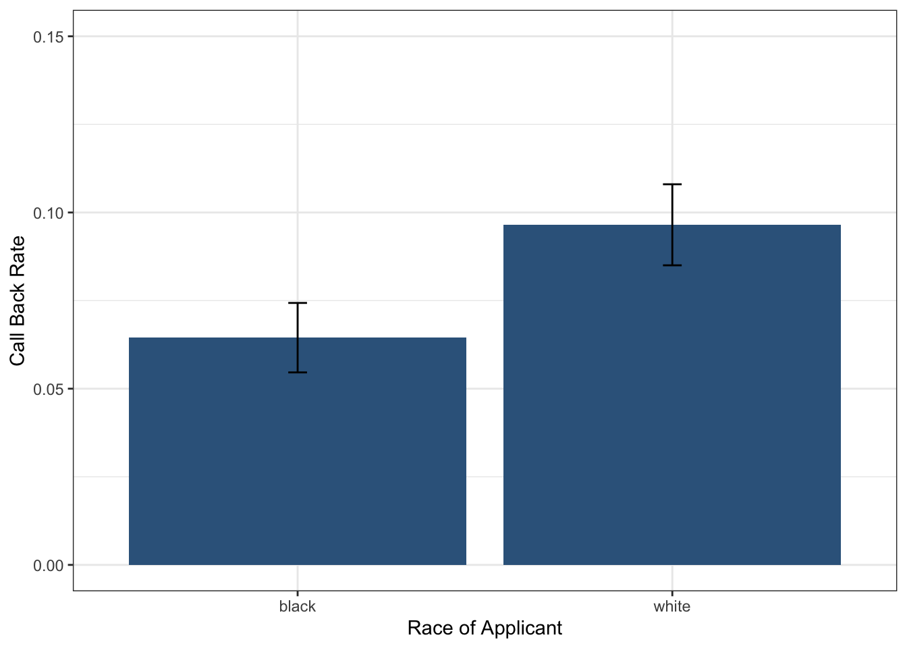

Module 7.2
Differences Between Two Groups
Overview
In this module, you’ll learn how to test whether relationships exist between two variables using permutation tests. We’ll explore this through a case study examining potential racial discrimination in hiring practices, using data from résumés sent to employers with randomly assigned names. Here is a video that introduces the concept of using bootstrapping methods to evaluate discrimination but through the lense of gender:
Understanding Hypotheses for Group Comparisons
When we want to determine whether a treatment or grouping variable has a real effect on an outcome, we need to set up two competing hypotheses. The null hypothesis states that there is no relationship between treatment and outcome, meaning any difference we observe is due to chance. The alternative hypothesis proposes that there is a genuine relationship, and the difference is not due to chance alone.
The key insight behind our approach is that under the null hypothesis, treatment has no impact on the outcome variable. This means that if we were to change the values of the treatment variable, the values on the outcome would stay the same. We can use this logic to simulate what we would expect to see if there truly was no effect.
Our strategy involves reshuffling the treatment variable, calculating the treatment effect, and repeating this process many times. This allows us to ask a fundamental question: how likely would we be to observe the treatment effect in our data if there really is no effect of the treatment?
The Résumé Experiment
To illustrate these concepts, we’ll examine a study by Bertrand and Mullainathan that investigated racial discrimination in responses to job applications in Chicago and Boston. The researchers sent 4,870 résumés to potential employers, randomly assigning names associated with different racial groups to otherwise identical résumés.
Analyzing Callback Rates by Race
Since race of applicant was randomly assigned in this experiment, any systematic differences in callback rates can be attributed to the racial associations of the names. Let’s examine the callback rates for each group:
# A tibble: 2 × 2
race calls
<chr> <dbl>
1 black 0.0645
2 white 0.0965We can save these means for easier access and then calculate the treatment effect, which is simply the difference in means between the two groups:
mean_white = means$calls[2]
mean_black = means$calls[1]
teffect <- mean_white - mean_black
teffect[1] 0.03203285Examining the Data with Confidence Intervals
Before conducting formal hypothesis tests, it’s valuable to examine both the point estimates and their confidence intervals. This gives us a sense of the precision of our estimates and whether the observed differences might be meaningful.
Let’s start by calculating the mean callback rates for each racial group:
# Bootstrap CIs for black applicants
ci_black <- resume_dta |>
filter(race == "black") |>
specify(response = received_callback) |>
generate(reps = 10000, type = "bootstrap") |>
calculate(stat = "mean") |>
get_ci(level = 0.95)
# Bootstrap CIs for white applicants
ci_white <- resume_dta |>
filter(race == "white") |>
specify(response = received_callback) |>
generate(reps = 10000, type = "bootstrap") |>
calculate(stat = "mean") |>
get_ci(level = 0.95)These two code chunks create bootstrap confidence intervals for the callback rates of Black and White applicants in a resume audit study. specify() identifies the response variable of interest (received_callback), generate() creates 10,000 bootstrap resamples for each group, calculate(stat = "mean") computes the callback rate in each resample and get_ci() calculates a 95% confidence interval from these bootstrap statistics.
Next, let’s put together the means and confidence intervals for both groups into a tibble so we can visualize them together:
# Combine for plotting
plot_dta <- tibble(
race = c("black", "white"),
mean_calls = c(mean_black, mean_white),
lower_95 = c(ci_black$lower_ci, ci_white$lower_ci),
upper_95 = c(ci_black$upper_ci, ci_white$upper_ci)
)
plot_dta# A tibble: 2 × 4
race mean_calls lower_95 upper_95
<chr> <dbl> <dbl> <dbl>
1 black 0.0645 0.0550 0.0743
2 white 0.0965 0.0846 0.109 Now we can use ggplot2 to create a visualization that shows both the callback rates and their uncertainty:
ggplot(plot_dta, aes(
y = mean_calls,
x = race,
ymin = lower_95,
ymax = upper_95
)) +
geom_col(fill = "steelblue4") +
geom_errorbar(width = .05) +
theme_bw() +
ylim(0, .15) +
labs(x = "Race of Applicant",
y = "Call Back Rate")
This ggplot creates a bar chart with error bars to visualize callback rates by race. The geom_col() function creates bars showing the mean callback rates, while geom_errorbar() adds the 95% confidence intervals. The ymin and ymax aesthetics define the error bar endpoints. We use theme_bw() for a clean appearance and ylim() to set consistent y-axis limits for better comparison between groups.
Looking at this plot, we can see clear differences between the groups and non-overlapping confidence intervals, which suggests there may be evidence of racial discrimination. But how can we formally test the null hypothesis to decide whether to reject it?
The Logic of Permutation Testing
To conduct a formal hypothesis test, we need to simulate what would happen under the null hypothesis. Our approach involves calculating the difference in means between white and black applicants, then shuffling the race variable and calculating the difference in means for the shuffled data. By repeating this process many times, we can simulate the null distribution of differences in callbacks. This is a called a permutation test—a method where we simulate the null distribution by shuffling group labels (e.g., race) to see what differences in means we would expect if the treatment had no effect.
Understanding the Permutation Process
Let’s walk through this process using a simplified hypothetical example with just six applicants:
Hypothetical Original Data
| Applicant | Race | Callback |
|---|---|---|
| A | Black | Yes |
| B | Black | No |
| C | Black | No |
| D | White | Yes |
| E | White | No |
| F | White | No |
The first step is to calculate the original difference in callback rates. This establishes our baseline understanding of the initial association between race and callback rates.
The second step involves shuffling or permuting the race variable. We randomly reassign race labels while keeping the callback outcomes exactly the same. This simulation reflects what we would expect to see if race truly had no effect on callbacks.
Hypothetical Shuffled Data
| Applicant | Race (Shuffled) | Callback |
|---|---|---|
| A | White | Yes |
| B | Black | No |
| C | White | No |
| D | White | Yes |
| E | Black | No |
| F | Black | No |
After shuffling, we calculate the difference in callback rates again between the Black and White groups. This tells us what kind of difference we might observe purely due to chance.
We repeat this shuffling process thousands of times to generate a distribution of differences that could occur by chance alone. If our observed difference is extreme compared to this null distribution (meaning the p-value is low), we have strong evidence to reject the null hypothesis.
Implementing the Permutation Test
In practice, we use the tidymodels package to handle the computational details of this simulation. The infer package provides a clean workflow for permutation testing:
null_dist <- resume_dta |>
specify(response = received_callback, explanatory = race) |>
hypothesize(null = "independence") |>
generate(10000, type = "permute") |>
calculate(stat = "diff in means",
order = c("white", "black"))Once we have our null distribution, we can calculate the p-value using the get_pvalue function from the infer package:
get_p_value(null_dist, obs_stat = teffect, direction = "greater")# A tibble: 1 × 1
p_value
<dbl>
1 0.0001Here we get a p-value of exactly zero, suggesting that none of the simulated differences in means was as extreme as the observed difference. This indicates that the observed racial gap in callbacks is highly unlikely to have occurred by chance alone.
You may notice a message saying to “be careful of reporting a p-value of zero” and that this is an artifact of the number of reps chosen in the generate() step. If you increase the number of reps, you may get a p-value that is very close to zero but not exactly zero because the p-value is calculated as the proportion of simulated differences that are greater than or equal to the observed difference. But if you have the patience (or a fast computer), you can increase the number of reps to 100,000 or more and see what happens!
Visualizing the Results
We can visualize our null distribution along with our observed statistic to better understand our results:
Drawing Conclusions
The p-value we obtained is very small, well below the conventional 0.05 threshold. This means that if there were truly no racial discrimination, we would almost never observe a difference as large as what we found in the data. Therefore, we reject the null hypothesis and conclude that the racial gap is extremely unlikely to have occurred due to chance alone. This provides statistical evidence of racial discrimination in hiring.